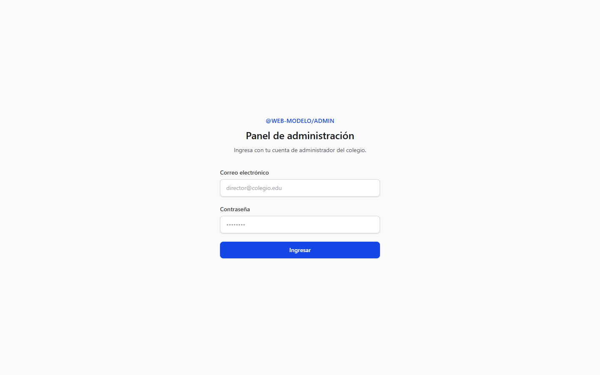
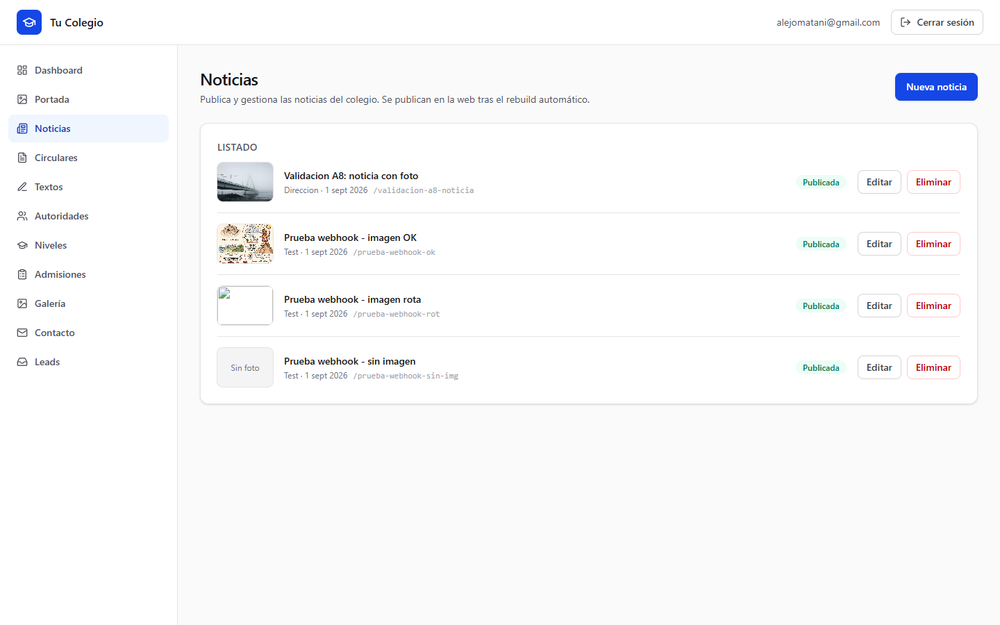
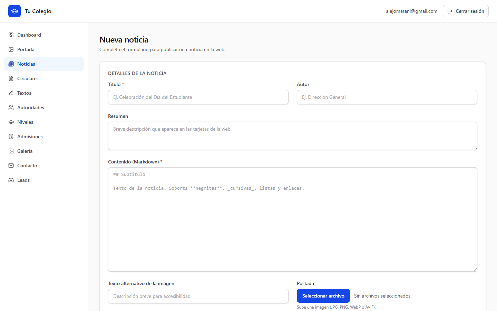
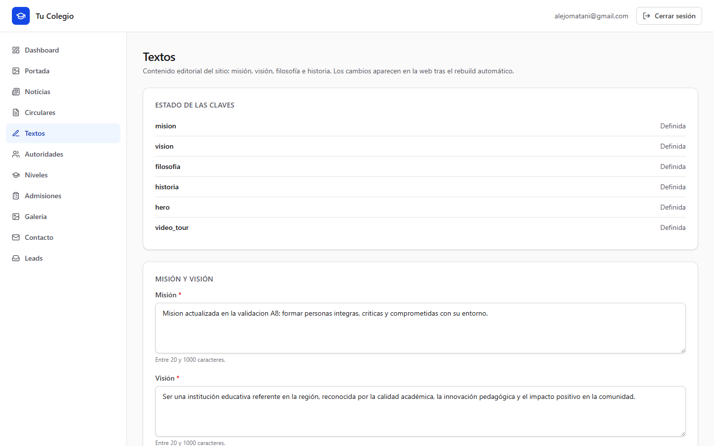
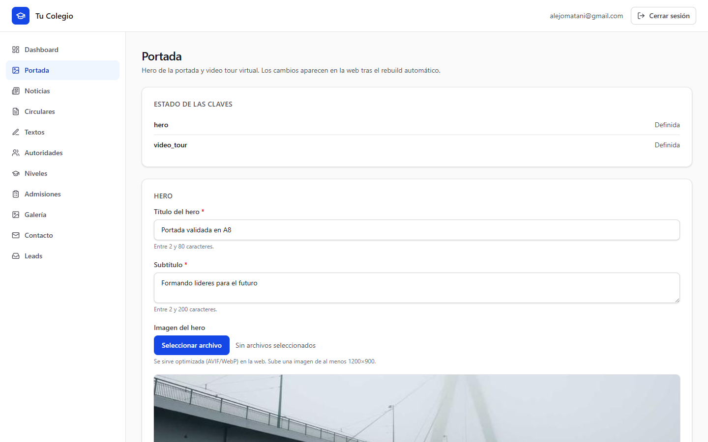

Panel de administración del colegio — publica contenido en la web en menos de 5 minutos.
Panel: admin-coral-three-91.vercel.app Web pública: colegioweb.vercel.appAbre el panel de administración en tu navegador e inicia sesión con tu correo y contraseña.

En el menú lateral haz clic en Noticias. Verás el listado de todas las noticias publicadas.

Haz clic en el botón "Nueva noticia". Se abre el formulario de creación.

Título (obligatorio) · Resumen (1-2 frases) · Contenido (obligatorio, texto completo) · Autor · Imagen (foto principal, JPG/PNG/WebP hasta 10 MB) · Texto alternativo (describe la foto).
Deja marcada la casilla "Publicado" y haz clic en "Guardar".
En el menú lateral haz clic en Textos. Verás los campos de Misión y Visión (y también Filosofía e Historia).

Edita el texto, haz clic en "Guardar" y la web se actualiza sola en /nosotros.
En el menú lateral haz clic en Portada. Ahí puedes cambiar el título principal, el subtítulo y la foto del hero (la imagen grande de la página de inicio).

También puedes actualizar el video del tour virtual (URL de YouTube + póster).
Abre la web pública en otra pestaña y confirma que el cambio apareció: